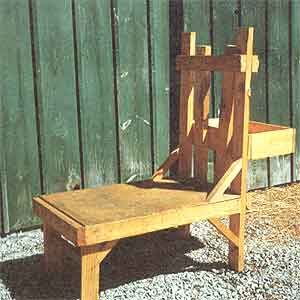
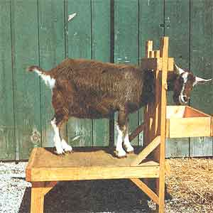
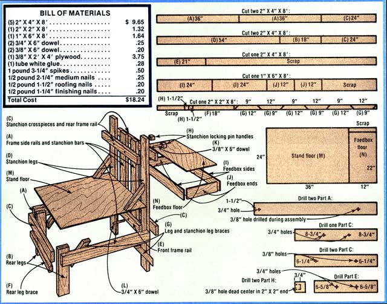

Not long ago-after grappling with my ornery old goat Eunice just one time too many-I decided that I was due to own a milking stand. Besides hoping that I could save a little of my own hide-and maybe even keep that crochety nanny from tap-dancing in the milk bucket-I figured I could use the restrainer when trimming the critter's hooves and administering her shots . . . two jobs that have always been difficult for both the nanny and me.
However, my search for a functional commercial milking stand was pretty disappointing. I found one locally. . . but it cost $60 and was so flimsy that I knew darn well Eunice would kick it into kindling in no time flat. Even a search of likely local auctions proved fruitless: I did, at one of the public sales, spy a custom job that looked sturdy enough to take my goat's best kick . . . but-unfortunately-I would have needed a crane and a flatbed truck to haul the massive frame (made from 4 X 6's) away.
So-with my good humor stretched to the breaking point from several hours of fruitless driving, and yet another milking time comin' up soon-I stomped out to the of workshop and set about building my own milking stand . . . a device that would measure up to my specific needs.
The resulting goat-grabber weighs less than 60 pounds, has survived almost a year of Eunice's abuse, and-best of all -can cost less than $18.24 to build (if you recycle some lumber, as I did). I've managed to haul the stand to two fairs (without slipping a disc lifting it), and have trimmed my nanny goat's hooves and administered her injections with a minimum of trouble ... since she'd much rather munch on oats from the feed bin than complain about such smalltime nuisances. Indeed, this stand might just be the answer to most any goatkeeper's prayers. And-if you'll follow my instructions-I think you'll find it as easy to build as I did.
In my experience, presawing the lumber for a shop project not only saves construction time, but also helps prevent mistakes . . . because it lets a builder understand how the pieces fit together before he or she starts nailing.
Begin by cutting the boards to the dimensions on the chart, but be sure to add 1/16" to each measurement to allow for the saw's width. Plus-if you mark each piece with a letter (according to the chart) after you cut it you won't have to remeasure the parts later to determine which is which.
Most of the required cuts can be made with a standard handsaw or a power saw . . . they're not in the least complicated. There is, however, one portion of the sawing which might-at least initially-look a little confusing. You see, in order for the leg braces to fit properly, they must be cut at a 45° angle. Fortunately, there's a shortcut which makes this job a breeze . . . with or without a miter box.
First mark a point 12 inches from one end of your 2" X 2" X 8' board. Then move along another 9 inches and scribe a second spot. Continue this 12-inch-then-9-inch spacing for another four points . . . so that you end up with marks at 12, 21, 33, 42, 54, and 63 inches.
Next, start at the same end of the 2" X 2" upon which you began the first series of marks but on the opposite long edge -and move in 1-1/2 inches to scribe the first point. Leave a 9inch space before marking again, and then move 12 inches more and scratch another line. Repeat the 9 inch, 12 inch series for four more marks . . . yielding points at 1-1/2, 10-1/2, 22-1/2, 31-1/2, 43-1/2, 52-1/2, and 64-1/2 inches.
Finally, simply cut through the angled line formed by each opposing pair of marks. (Or you could set your miter box -if you have on eat 45° . . . which should just match the slants marked by the sets of points.) Then, once the angled pieces (G) are made, cut the 18" rear leg brace (F)-and the two 1-1/2" stanchion locking pin handles (H)-from the remaining section of 2" X 2".
After all the parts are cut and marked, gather up the pieces which require drilling (as indicated by the drilling table that accompanies this article). Notice that-as shown in the tool list-3/8" and 3/4" drill bits will be necessary.
And bear in mind-as you make the required holes-that thougli all of them should be drilled as squarely as possible, it is exceedingly important that the 3/4" bores be straight . . . or there will be an alignment problem when you try to assemble the stand's stanchions.
Tacking the milking stand together is the simplest part of the procedure . . . once all the parts are cut to size and marked. First, locate the nails specified in the materials list: The 3-1/4" spikes are used to secure the 2" X 4" boards, the 2-1/4" fasteners are for the braces, the 1-1/2" roofing nails hold the floor in place, and the 1-1/4" finishing nails both keep the feedbox together and form the brace which holds up the grain receptacle's floor.
Now start the actual construction of the milking stand by assembling the frame from the two undrllled side frame rails (A), the undrilled rear frame rail (C), and the drilled front frame rail (E). Remember, while Part E fits between the side rails, Part C spans the ends of those longitudinal pieces. Once the rectangle is together, add the rear legs (B) and their brace (F). These supports should be set into the corner formed by the frame rails so that their ends are flush with the frame's top surface. Also at this time, locate the two 3/4" X 6" dowels and glue them into the front frame rail (E), so the adhesive will be well set by the time you need to work with the assembly.
Next take both stanchion legs (D), measure 14-1/2 inches from one end of each of 'em and make a mark-square to the length of each board-at both of those points. Line the marks up with the bottom of the front frame rail and side rail ends, and nail the stanchion legs into the indicated position.
Now slip both stanchion bars (A, drilled) over the two 3/4' dowels (protruding from E), smear the dowel ends with glue, and slide the stanchion crosspiece (C, drilled 3/4") over these dowels and nail it to the stanchion legs.
To complete the stanchion assembly, mark a line 5-1/2 inches down from the top of each stanchion leg, position the upper edge of one of the stanchion crosspieces (C, drilled 3/8") on this line, and nail it in place.
Using the holes in this crosspiece as a guide, adjust the stanchion bars so they line up with the bores and drill a 3/8" hole through each Part A to match the openings in Part C. Then slide the two 3/8" X 6" dowels through the new holes in the stanchion bars and into the already secured stanchion crosspiece. Now to assure proper alignment of the last crosspiece-slide this final cross-member (C, drilled 3/8") onto the dowels and attach it to the stanchion legs. With that done, remove the 3/8" X 6" dowels, apply glue to one end of each piece, and insert them into their stanchion locking pin handles (H). (These "grips" will enable you to remove the upper dowels and awing the stanchion bars apart to accommodate your nanny's neck.)
Finally, install the four lower angled leg braces, set the flooring in place with the roofing nails, and then add the two upper leg braces. That's all there is to it!
To help keep your goat occupied while you're milking or otherwise tending to the critter, why not build this simple grain box with a removable floor? Just lay out the four precut 1" X 6" boards, and draw a line-1/2 inch from the lower edge-the entire length of each piece. Then tack two finishing nails on this line in each feedbox end (evenly spaced, of course), and hammer four more finishing nails into each feedbox side (again, set a common distance apart). Finally, nail the four boards together as shown, slip the floor into place on the protruding nail supports, and attach the completed feedbox to the milking stand by tacking the grain bin in place with a few medium (2-1/4") spikes.
Once I finished designing the stand, the actual construction took only a little over two hours. Now-when I sit back to consider the low cost of my device, the time it took to build the stand, and the fact that the finished product is exactly what I wanted-I'm more convinced than ever that "the best way to do it is to do it yourself"!
|
 |
 |
 |